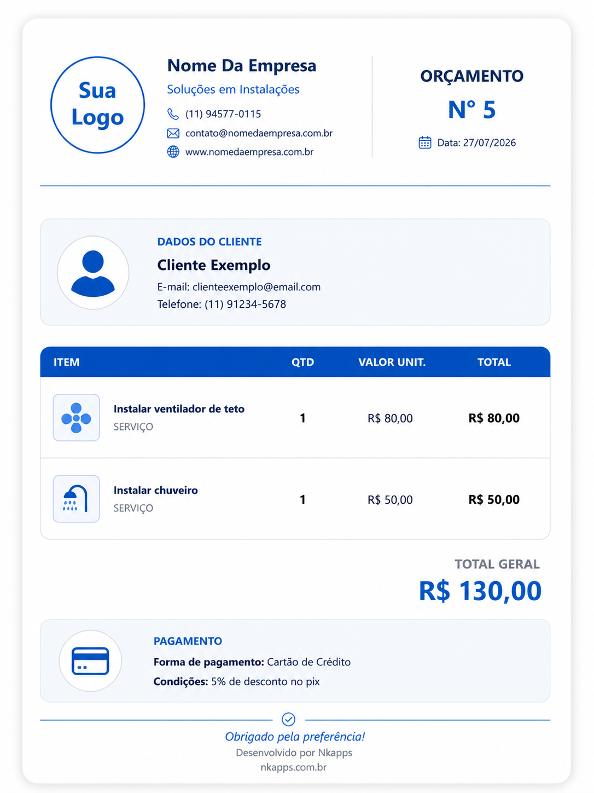
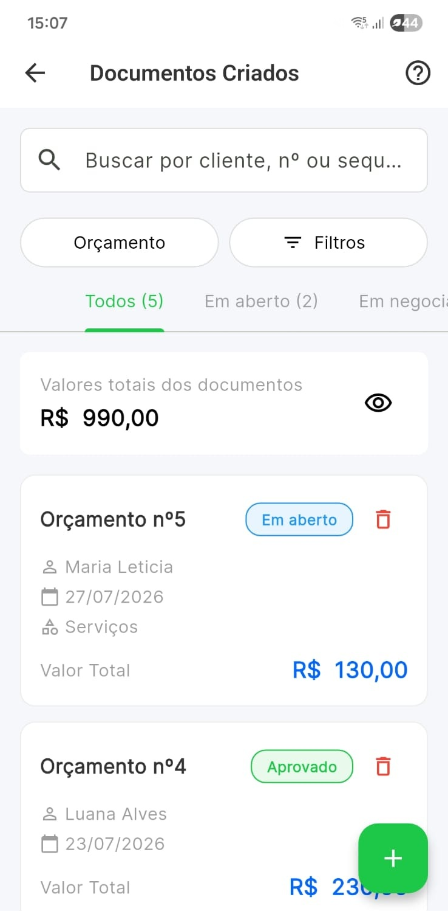
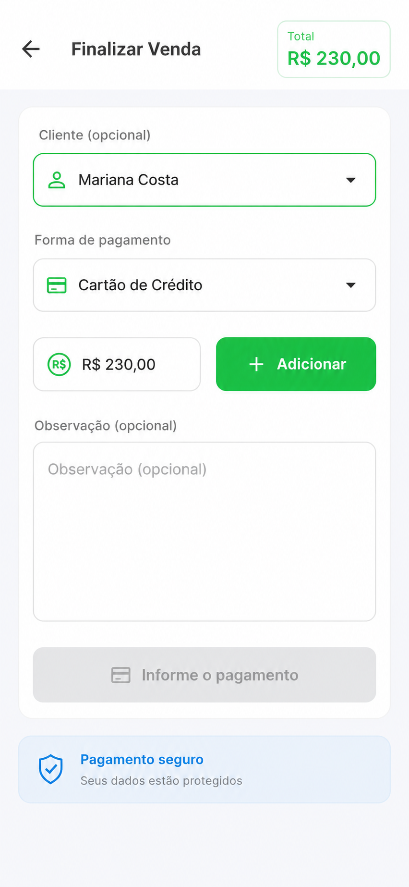

Crie
Monte o orçamento no Valeu com itens e condições.
O cliente abre a proposta pelo navegador, consulta itens e condições, pode enviar mensagem e aprovar online. O profissional acompanha o retorno dentro do Valeu.

Monte o orçamento no Valeu com itens e condições.
Envie o link pelo WhatsApp ou copie para outro canal.
A proposta fica disponível no navegador.
Ele consulta, envia mensagem e pode aprovar.
O retorno entra no orçamento e o fluxo segue para venda.
O orçamento digital cria um ponto de contato ativo com o cliente. A página reúne o que ele precisa para entender a proposta e tomar uma decisão.
Serviços, produtos, materiais e total ficam claros para o cliente.
As regras combinadas aparecem junto da proposta.
Ele pode enviar mensagem, gerar PDF e aprovar o orçamento.

O cliente pode usar a página digital para acompanhar a negociação e ainda gerar ou receber o PDF quando precisar de uma versão formal.
O histórico do orçamento ajuda o profissional a entender se a proposta foi enviada, visualizada e aprovada, em vez de depender apenas de mensagens soltas.
Em vez de separar proposta e conversa, o Valeu mantém a mensagem no contexto daquela negociação. Isso facilita entender o que foi pedido e o que foi respondido.
Questões sobre prazo, material, valor ou condição de pagamento ficam associadas ao orçamento.
A resposta também fica dentro da mesma negociação.
O histórico ajuda a retomar a conversa sem depender da memória ou de vários aplicativos.

Quando a negociação avança, o orçamento continua no Valeu. O profissional acompanha o status e pode seguir com a operação.
Depois do aceite, o profissional pode transformar o orçamento em venda e registrar o recebimento, inclusive com desconto e forma de pagamento.

O orçamento digital cria uma sequência clara: enviar, visualizar, conversar, aprovar e continuar o serviço dentro do Valeu.
Como funciona o link público e a experiência do orçamento digital do Valeu.
Não. O orçamento digital é aberto pelo navegador por meio do link compartilhado pelo profissional.
Sim. O orçamento pode ser compartilhado pelo WhatsApp e o cliente abre a página diretamente pelo link.
Sim. A página do orçamento permite que a interação fique vinculada àquela negociação.
O fluxo registra a abertura do orçamento na atividade do documento.
Sim. A aprovação feita na página pública é registrada no fluxo do orçamento.
Sim. O PDF continua disponível junto com a experiência digital.
Compartilhe, acompanhe e continue o fechamento dentro do Valeu.